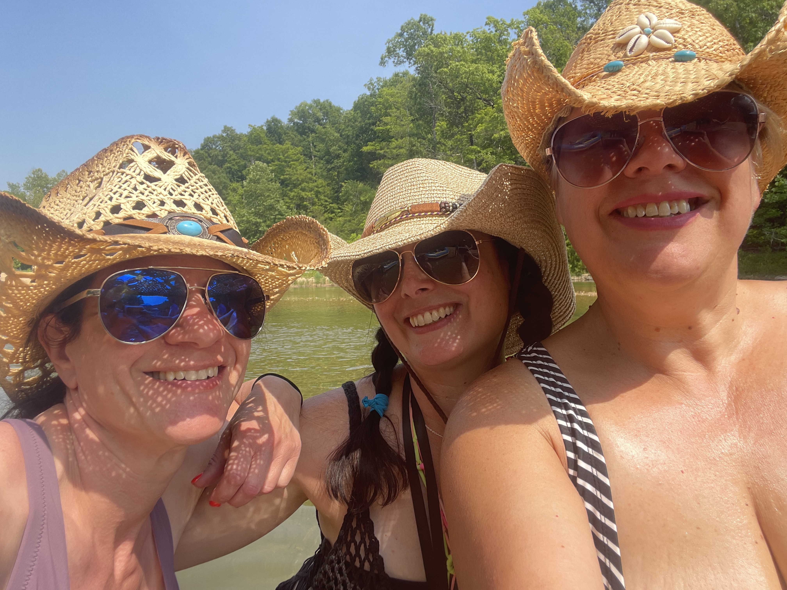
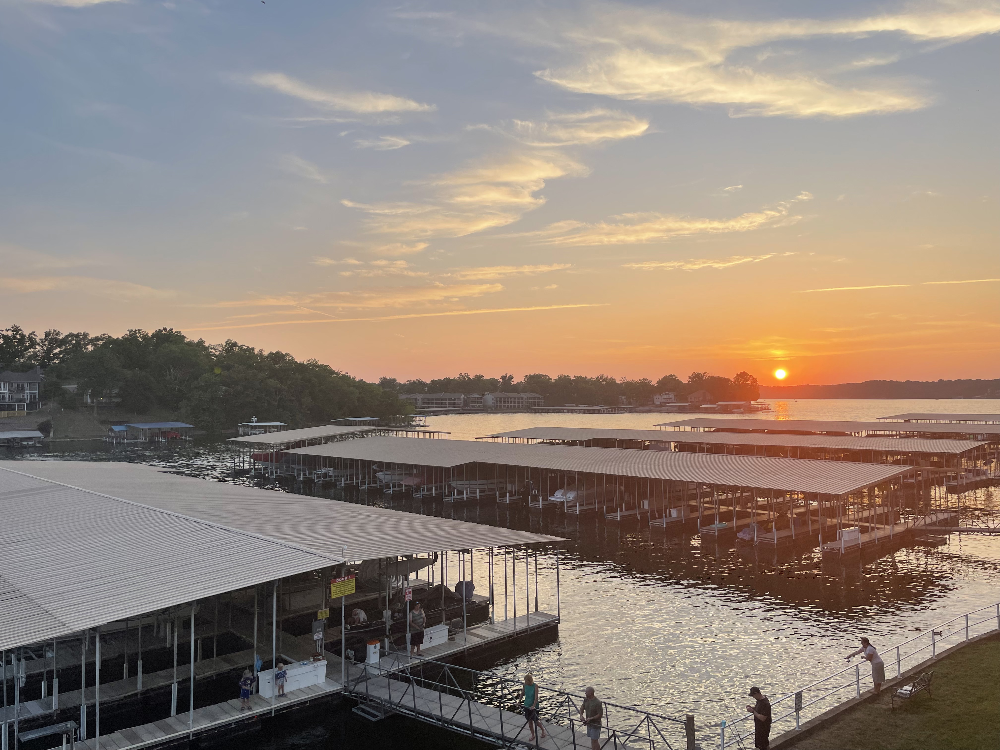

Summer is my favorite season because there are so many events and activities that I enjoy. I love being outdoors and hanging out with family and friends. With so much to do the only thing I don't like about summer is that there isn't enough time to do everything I want to do.
My Favorite Summer Activities
- Kayaking
- River Days
- Summer Concerts
- Wineries
- Festivals
This Summers Adventures
Flew an airplane!

My dad is a pilot and flight instructor. It's been quite awhile since I have been flying with him, so this summer I asked if he could take me up in the plane. While we were in the air he asked me if I wanted to fly the plane. I was terrified at first, but soon got the hang of it!
Grant's Farm
Grant's Farm has a really fun summer concert series and this year they added a drone show. I went with some friends and we had a blast. The drone show is a must see!
Trixie Delight Float Trip
I love a good float trip and this year one of my favorite local bands did a concert and float trip at BearCat Getaway. It was a fun weekend filled with music, dancing, friends and floating. Great time!
Kayaking

I have done some kayaking on different Missouri rivers as well as at Creve Coeur Lake, but this year we decided to try out the kayaks at Forest Park Boathouse. I was fun to paddle around the park and afterwards we enjoyed food from The Boathouse and a summer concert(another summer favorite).
Theatre


I have always enjoyed a bit of theatre, but during the summer I love Shakespeare in the park and The Muny. I did both this year; This years production of Shakespeare was Twelve Night and I saw Chess for the first time at The Muny.
Lake of the Ozarks
Every year I go to Lake of the Ozarks with my mom and spend a relaxing weekend floating in the water.
River Day
On the way back from the lake my mom really wanted to stop at the river to hang out with my family who had picked that weekend to have a river day. There are so many great spots in Missouri to hang out at the river and we have a few favorites within an hour to an hour an half of STL.
Horseradish Festival
Ever heard of The horseradish festival? Me either, but apparently Collinsville, ILL is the horseradish capital of the world. Another one of my favorite local bands was playing so we brought our chairs and enjoyed the music and food.
Defiance Ridge Vineyards

My most recent adventure was a trip to Defiance Ridge vineyards near St. Louis, for an afternoon of fun with friends and another afternoon with SuperJam.